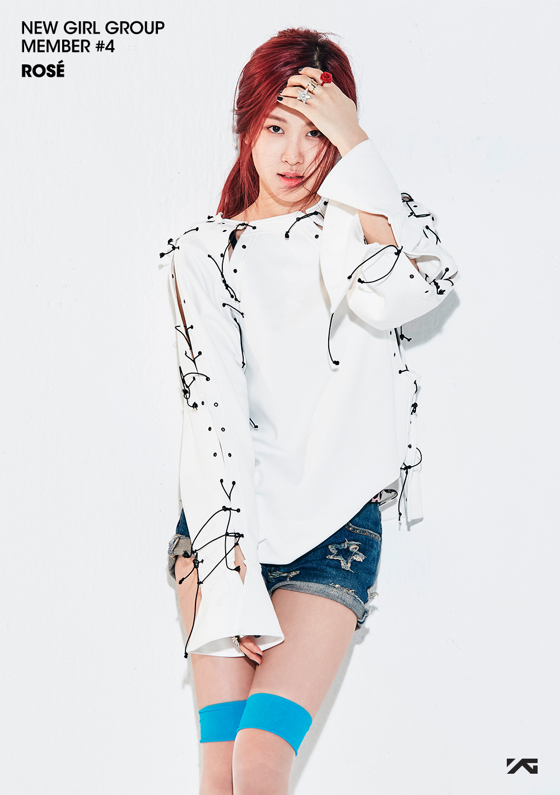

|  |
|
Describtion
Early Life
Rosé, born Roseanne Park on February 11, 1997, in Auckland, New Zealand, is the daughter of South Korean parents Mason Park and Clare Park. She has one older sister named Alice Park. When Rosé was seven years old, her family relocated to Melbourne, Australia, where she spent most of her early years. Growing up, she developed a deep passion for music, inspired by church performances and artists like Taeyang and Coldplay. She began singing in church choirs, writing her own songs, and teaching herself to play instruments such as the guitar and piano. Even though her family initially viewed music as a hobby, her father encouraged her to audition for YG Entertainment when she was 15, which changed the course of her life.
Cildhood & Student Life
Rosé attended Kew East Primary School and later Canterbury Girls’ Secondary College in Melbourne. She was a quiet but artistic student, known for her creativity and love for performing. During her teenage years, she spent her free time singing and recording music covers. In 2012, her father found out about YG Entertainment’s auditions in Sydney and encouraged her to try. She was chosen out of 700 participants, ranking first, which led her to move to Seoul, South Korea. Leaving her school, friends, and family behind at such a young age was a major life change, but she was determined to follow her dreams of becoming a singer.
Early Life of Her Carrier
Rosé’s trainee life in South Korea was one of the toughest periods of her life. Having grown up in Australia, she struggled with the language, homesickness, and the strict Korean trainee culture. She described her experience as “fighting for my life,” explaining that she felt she had to catch up with other trainees who had been training for years. Rosé had no prior experience in professional dance, so she spent countless hours perfecting her movements while strengthening her vocal abilities. Training lasted long hours each day, often from early morning until midnight, with evaluations every month that determined if she could continue. Despite many hardships and tears, she pushed herself to improve. After four years of intense training, her hard work paid off when she debuted as the main vocalist and lead dancer of BLACKPINK in August 2016.
Succes
After her debut, Rosé quickly became recognized for her unique and emotional voice, which set her apart in the K-pop industry. BLACKPINK’s global success came rapidly, with songs like “Boombayah,” “Whistle,” “Ddu-Du Ddu-Du,” and “Kill This Love” breaking records worldwide. Rosé’s popularity grew not only as a member of the group but also as an individual artist. In March 2021, she made her solo debut with the single album “R,” featuring the songs “On the Ground” and “Gone.” The album achieved record-breaking streaming numbers, including the most views in 24 hours for a K-pop solo artist. In December 2024, she released her first full-length album “Rosie,” showcasing a mix of pop, rock, and R&B sounds, proving her range as both a vocalist and songwriter. Rosé has also become a global fashion icon. She is the global ambassador for Yves Saint Laurent, Tiffany & Co., Sulwhasoo, and PUMA, as well as the face of RIMOWA. Her elegant yet edgy style has earned her front-row invitations at major fashion events, and she is frequently featured in top magazines like Vogue, Elle, and Harper’s Bazaar. She is admired not only for her talent but also for her humility and strong work ethic, representing modern K-pop artistry at the highest international level.
Current Situation
As of 2025, Rosé continues to shine as one of the most influential figures in the global music and fashion industries. After BLACKPINK’s successful Born Pink world tour, she began focusing more on her solo career. In December 2024, she released her first full studio album titled Rosie, which received worldwide attention for its artistic maturity and personal storytelling. The album included hit songs such as “APT.,” a collaboration with Bruno Mars, and “Messy,” released in May 2025, both of which charted internationally and showcased her evolving musical style. Beyond music, Rosé has expanded her presence in television, film, and global media. She has made special appearances in reality programs and documentaries such as 24/365 with BLACKPINK and BLACKPINK: Light Up the Sky, which give fans a deeper look into her personal and professional life. She has also participated in several international fashion events, award shows, and charity campaigns. Rumors have circulated about her potential acting debut, as various entertainment outlets reported she has received offers for film and drama roles, though nothing has been officially confirmed. In the world of endorsements, Rosé remains one of the most sought-after celebrities. She continues her roles as global ambassador for Yves Saint Laurent, Tiffany & Co., Sulwhasoo, and PUMA, and in 2025 she became the face of several new campaigns, including luxury travel brand RIMOWA and international skincare collaborations. Her influence in both the fashion and beauty industries continues to grow, with her social media presence driving global trends and brand visibility. Rosé currently divides her time between Korea, the United States, and Europe for promotional work and recording sessions. She remains an active member of BLACKPINK, participating in select group projects while continuing to build her solo identity. Fans and media alike describe her as one of the most respected and hardworking artists of her generation, admired for her elegance, kindness, and dedication to music and artistry.
Songs And Albums
| Year | Title / Album | Director | Co-Star / Featured Artist | Songwriter(s) | Awards / Achievements |
|---|---|---|---|---|---|
| 2012 | Without You (G-Dragon ft. Rosé) | Han Sa-min | G-Dragon | G-Dragon, Teddy Park | Rosé’s first recorded appearance before debut; charted high in Korea |
| 2016 | Square One (BLACKPINK Debut Single Album) | Seo Hyun-seung | BLACKPINK Members (Jisoo, Jennie, Lisa, Rosé) | Teddy Park, Bekuh Boom | “Whistle” and “Boombayah” won Song of the Year (Gaon), Best New Artist (MAMA 2016) |
| 2016 | Boombayah | Seo Hyun-seung | BLACKPINK | Teddy Park, Bekuh Boom | BLACKPINK debut song; topped Billboard World Digital Songs Chart |
| 2016 | Whistle | Beomjin J | BLACKPINK | Teddy Park, Bekuh Boom | Digital Song of the Year (Gaon); over 1 billion YouTube views |
| 2017 | As If It’s Your Last | Seo Hyun-seung | BLACKPINK | Teddy Park, Future Bounce, Lydia Paek | Song of the Summer; over 1.3 billion YouTube views |
| 2018 | Square Up (Mini Album) | Han Sa-min | BLACKPINK | Teddy Park, Bekuh Boom | Lead single “Ddu-Du Ddu-Du” reached #1 in Korea and #55 on Billboard Hot 100 |
| 2018 | Ddu-Du Ddu-Du | Han Sa-min | BLACKPINK | Teddy Park, 24 | First K-pop girl group MV to reach 2 billion views on YouTube |
| 2019 | Kill This Love (EP) | Han Sa-min | BLACKPINK | Teddy Park, R. Tee, 24 | MTV VMA Award for Best Group (2019); over 1.8 billion YouTube views |
| 2019 | Kill This Love | Han Sa-min | BLACKPINK | Teddy Park, Bekuh Boom | Won Song of the Year (Asian Pop Music Awards) |
| 2020 | How You Like That | Seo Hyun-seung | BLACKPINK | Teddy Park, Danny Chung, 24 | Won Best Song at MTV EMA; broke 5 Guinness World Records |
| 2020 | Ice Cream | Brad Furman | Selena Gomez & BLACKPINK | Selena Gomez, Ariana Grande, Teddy Park, Tommy Brown | Billboard Hot 100 #13; major international collaboration |
| 2020 | The Album (BLACKPINK) | Han Sa-min | BLACKPINK | Teddy Park, David Guetta, Tommy Brown, Ariana Grande | Billboard 200 #2; included hits “Lovesick Girls” and “Pretty Savage” |
| 2021 | R (Single Album) | Han Sa-min | Rosé (Solo) | Rosé, Teddy Park, Raúl Cubina, Brian Lee, Jorgen Odegard | Guinness World Record for most-viewed K-pop solo MV in 24 hrs |
| 2021 | On the Ground | Han Sa-min | Rosé (Solo) | Rosé, Teddy Park, Raúl Cubina, Brian Lee, Jorgen Odegard | Billboard Global 200 #1; MAMA Best Female Artist |
| 2021 | Gone | Kwon Yong-soo | Rosé (Solo) | Rosé, Brian Lee, Jorgen Odegard, Teddy Park | Digital Song of the Year (Gaon, March) |
| 2022 | Born Pink (Album) | Han Sa-min | BLACKPINK | Teddy Park, Danny Chung, Bekuh Boom, R. Tee | Topped Billboard 200; “Shut Down” #1 on iTunes in 60+ countries |
| 2022 | Pink Venom | Han Sa-min | BLACKPINK | Teddy Park, Bekuh Boom | Won Best Music Video (MAMA 2022); 100M YouTube views in 24 hrs |
| 2024 | Rosie (Full Solo Album) | Han Sa-min (Visual Director) | Rosé (Solo, with features) | Rosé, Bruno Mars, Teddy Park, Bekuh Boom, 24 | First Korean female solo album to enter Billboard 200 Top 20 |
| 2024 | APT. | Han Sa-min | Bruno Mars | Rosé, Bruno Mars, Teddy Park, Bekuh Boom | Nominated for Best Pop Collaboration (Asian Music Awards 2025) |
| 2024 | Number One Girl | Han Sa-min | Rosé (Solo) | Rosé, Brian Lee, 24, Teddy Park | Top 5 on Melon Chart; praised for emotional storytelling |
| 2025 | Messy | Lee Sung-kyu (rumored) | Rosé (Solo) | Rosé, Teddy Park, Bekuh Boom | Charted #1 in 12 countries; nominated Song of the Year (MAMA 2025) |